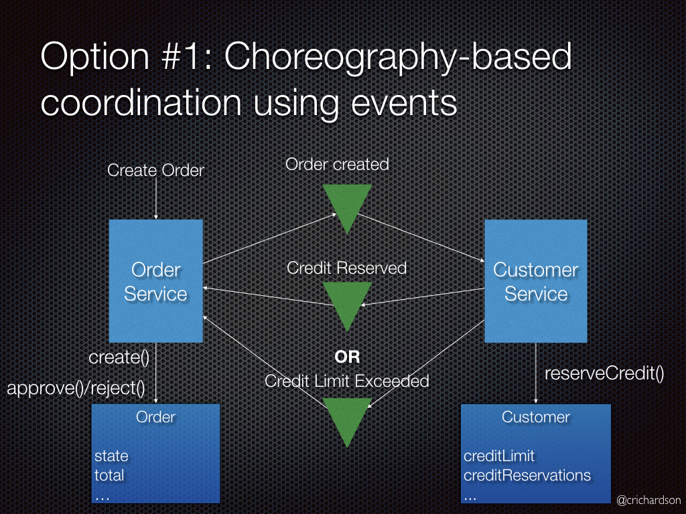
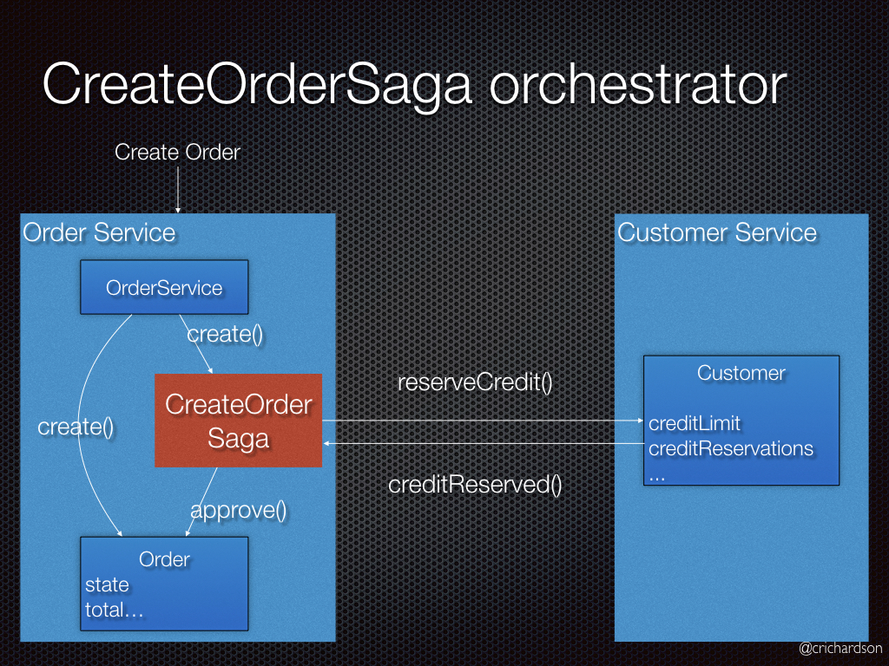

В микросервисной архитектуре слабо связанные сервисы взаимодействуют друг с другом для выполнения задач, относящихся к их бизнес-возможностям. Микросервисы в значительной степени получили свое название из-за того, что сервисы здесь меньше, чем в монолитной среде. Тем не менее микро — о бизнес-возможностях, а не о размере. По сравнению с монолитом в микросервисах у вас есть несколько единиц развертывания. Каждый сервис развертывается самостоятельно.
Микросервисы могут быть написаны на разных языках и быть запущены на разных платформах.
Синхронные вызовы не приветствуются.
Для каждого микросервиса должна быть отдельная БД.
Распределенные транзакции охватывают несколько физических систем(ПК, Микросервисов, БД), в то время как стандартные транзакции этого не делают.
Database per service - каждый сервис должен иметь доступ только к своим местам хранения информации:Таблицы, схемы или БД.
Saga - если мы используем паттерн "Database per service" нам нужно обеспечить согласованность данных между
сервисами.
Необходимо каждую бизнес транзакцию, которая охватывает несколько сервисов, реализовывать как сагу.
Сага представляет собой набор локальных транзакций. Каждая локальная транзакция обновляет базу данных и
публикует сообщение или событие, инициируя следующую локальную транзакцию в саге. Если транзакция завершилась
неудачей, например, из-за нарушения бизнес правил, тогда сага запускает компенсирующие транзакции, которые
откатывают изменения, сделанные предшествующими локальными транзакциями.
Существует два способа координации саг:
Хореография (Choreography) — каждая транзакция публикует события, которые запускают транзакции в других сервисах. 
Будут выполнены следующие шаги:
Оркестровка (Orchestration) — оркестратор говорит участникам, какие транзакции должны быть запущены.
Будут выполнены следующие шаги: